door wall front

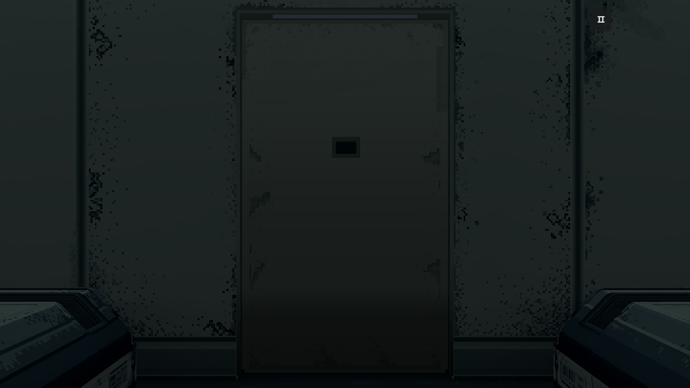

只更换门的一张颜色图：去掉原图斜向亮带，改为与房间相符的哑光矿物／陶瓷复合涂层，补足细碎接触旧化和主面材料变化。门形、UV、Shader、状态窗、自动开闭、框内绿灯／柔光、全室灯光、已认可20舱和墙地保持。
PixelLab原生制作，Aseprite分层；112×184原生裁切，无缩放，无脚本污斑。正式F5未切换；本页为独立审查。来源与检查 · 完整Blender · Aseprite母版

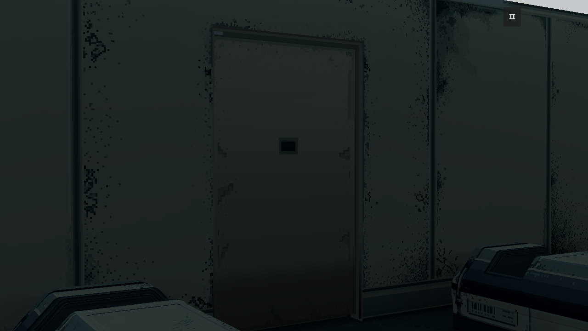
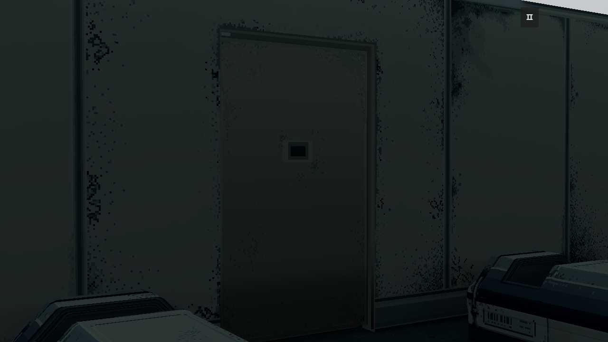
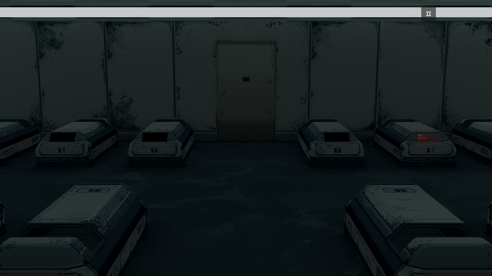
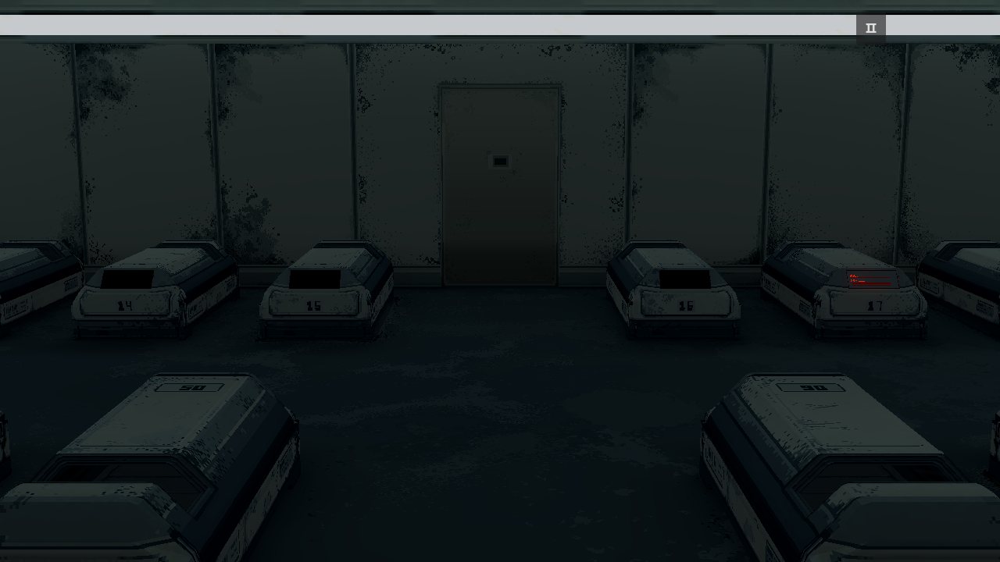
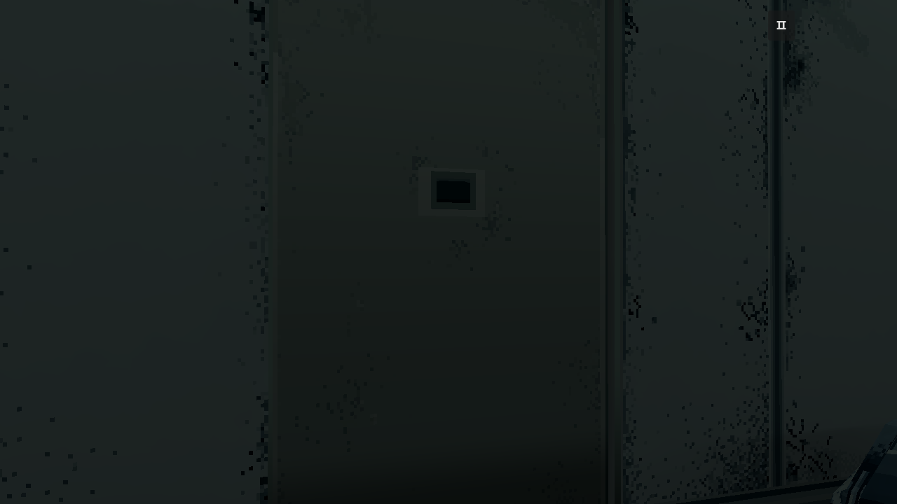
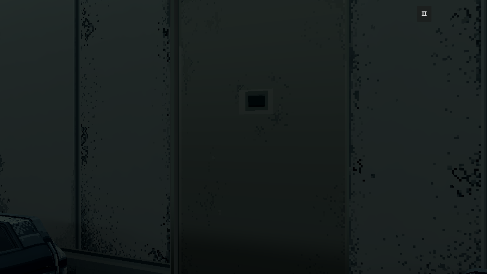
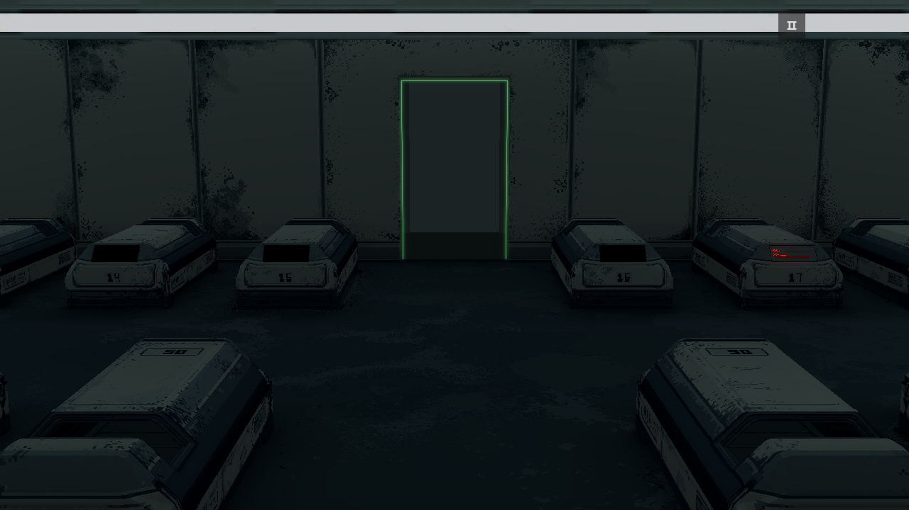
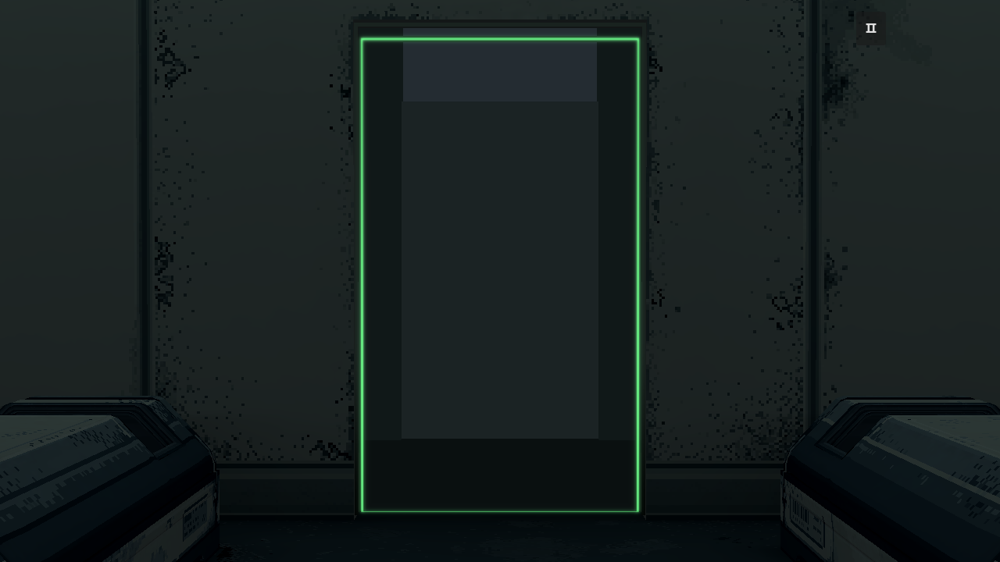
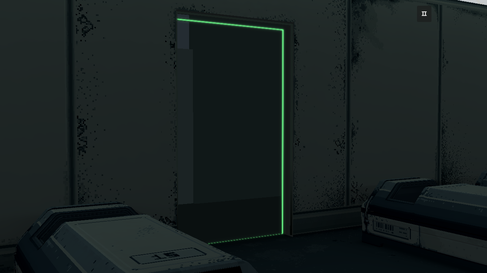
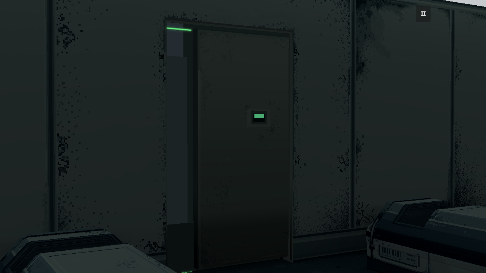
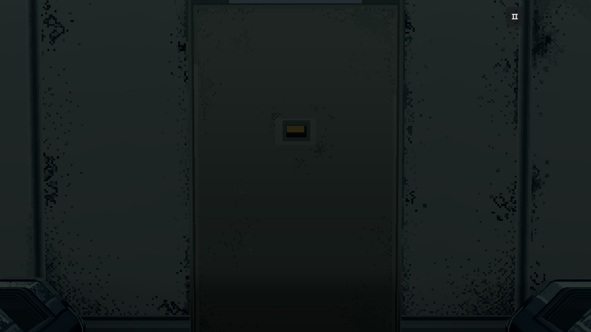
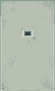